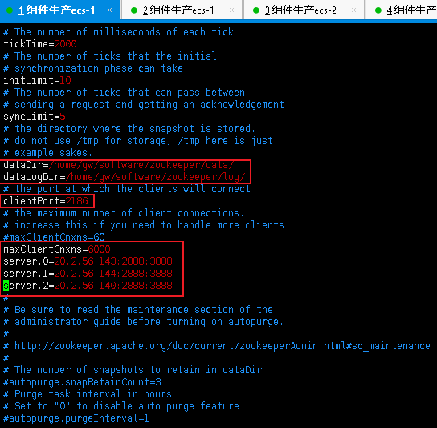

[root@iZ9ur01td940v35skimdc9Z ~]# fdisk /dev/vdb Welcome to fdisk (util-linux 2.23.2).
Changes will remain in memory only, until you decide to write them. Be careful before using the write command.
Device does not contain a recognized partition table Building a new DOS disklabel with disk identifier 0x8dcdf9a3.
Command (m for help): m Command action a toggle a bootable flag b edit bsd disklabel c toggle the dos compatibility flag d delete a partition g create a new empty GPT partition table G create an IRIX (SGI) partition table l list known partition types m print this menu n add a new partition o create a new empty DOS partition table p print the partition table q quit without saving changes s create a new empty Sun disklabel t change a partition's system id u change display/entry units v verify the partition table w write table to disk and exit x extra functionality (experts only)
Command (m for help): n Partition type: p primary (0 primary, 0 extended, 4 free) e extended Select (default p): p Partition number (1-4, default 1): First sector (2048-209715199, default 2048): Using default value 2048 Last sector, +sectors or +size{K,M,G} (2048-209715199, default 209715199): Using default value 209715199 Partition 1 of type Linux and of size 100 GiB is set
Command (m for help): p
Disk /dev/vdb: 107.4 GB, 107374182400 bytes, 209715200 sectors Units = sectors of 1 * 512 = 512 bytes Sector size (logical/physical): 512 bytes / 512 bytes I/O size (minimum/optimal): 512 bytes / 512 bytes Disk label type: dos Disk identifier: 0x8dcdf9a3
Device Boot Start End Blocks Id System /dev/vdb1 2048 209715199 104856576 83 Linux
Command (m for help): w The partition table has been altered!
Calling ioctl() to re-read partition table. Syncing disks.
[root@iZ9ur01td940v35skimdc9Z /]# ll /dev/vd* brw-rw---- 1 root disk 253, 0 Jun 2819:21/dev/vda brw-rw---- 1 root disk 253, 1 Jun 2819:21/dev/vda1 brw-rw---- 1 root disk 253, 16 Jun 2819:21/dev/vdb brw-rw---- 1 root disk 253, 17 Jun 2819:21/dev/vdb1
[root@iZ9ur01td940v35skimdc9Z /]# pvcreate /dev/vdb1 WARNING: ext4 signature detected on /dev/vdb1 at offset 1080. Wipe it? [y/n]: y Wiping ext4 signature on /dev/vdb1. Physical volume "/dev/vdb1" successfully created.
[root@iZ9ur01td940v35skimdc9Z /]# pvdisplay --- Physical volume --- PV Name /dev/vdb1 VG Name vg_data PV Size <100.00 GiB / not usable 3.00 MiB Allocatable yes PE Size 4.00 MiB Total PE 25599 Free PE 25599 Allocated PE 0 PV UUID GusHKH-nlVh-VnLS-v9IP-Ii7P-rwJM-fa8vd1
[root@iZ9ur01td940v35skimdc9Z /]# vgdisplay --- Volume group --- VG Name vg_data System ID Format lvm2 Metadata Areas 1 Metadata Sequence No 1 VG Access read/write VG Status resizable MAX LV 0 Cur LV 0 Open LV 0 Max PV 0 Cur PV 1 Act PV 1 VG Size <100.00 GiB PE Size4.00 MiB Total PE 25599 Alloc PE / Size0 / 0 Free PE / Size25599 / <100.00 GiB VG UUID Xm3Sw5-o2J9-exQB-PYcs-06ok-nf2U-pv5flz
[root@iZ9ur01td940v35skimdc9Z /]# mkfs.ext4 /dev/vg_data/lv_data // 命令也是对的，不知道为什么会报没有这个设备？ mke2fs 1.42.9 (28-Dec-2013) Could not stat /dev/vg_dat_data --- No such file or directory
The device apparently does not exist; did you specify it correctly?
[root@iZ9ur01td940v35skimdc9Z /]# mkfs.ext4 /dev/vg_data/lv_data mke2fs 1.42.9 (28-Dec-2013) Filesystem label= OS type: Linux Block size=4096 (log=2) Fragment size=4096 (log=2) Stride=0 blocks, Stripe width=0 blocks 6488064 inodes, 25952256 blocks 1297612 blocks (5.00%) reserved for the super user First data block=0 Maximum filesystem blocks=2174746624 792 block groups 32768 blocks per group, 32768 fragments per group 8192 inodes per group Superblock backups stored on blocks: 32768, 98304, 163840, 229376, 294912, 819200, 884736, 1605632, 2654208, 4096000, 7962624, 11239424, 20480000, 23887872
Allocating group tables: done Writing inode tables: done Creating journal (32768 blocks): done Writing superblocks and filesystem accounting information: done
[root@iZ9ur01td940v35skimdc9Z /]# vim /etc/fstab [root@iZ9ur01td940v35skimdc9Z /]# cat /etc/fstab # # /etc/fstab # Created by anaconda on Thu Jul 11 02:52:01 2019 # # Accessible filesystems, by reference, are maintained under '/dev/disk' # See man pages fstab(5), findfs(8), mount(8) and/or blkid(8) for more info # UUID=1114fe9e-2309-4580-b183-d778e6d97397 / ext4 defaults 11 /dev/vg_data/lv_data /home ext4 defaults 11 [root@iZ9ur01td940v35skimdc9Z /]# mount -a mount: wrong fs type, bad option, bad superblock on /dev/mapper/vg_data-lv_data, missing codepage or helper program, or other error
In some cases useful info is found in syslog - try dmesg | tail or so.
配置解释 【server】的配置含义说明： server.A=B:C:D 其中 A 是一个数字，表示这个是第几号服务器 B 是这个服务器的IP地址； C 表示的是这个服务器与集群中的Leader服务器交换信息的端口； D 表示的是万一集群中的Leader服务器挂了，需要一个端口来重新进行选举，选出一个新的 Leader，而这个端口就是用来执行选举时服务器相互通信的端口。
三个节点的zoo.cfg文件相同，可以直接复制。

创建myid文件
1 2 3 4 5 6 7
在zoo.cfg配置的dataDir目录下创建myid的文件。 cd /home/gw/software/zookeeper/data vim myid 然后，内容写一个数字，保存即可。(这个数字，是对应的server.[数字]的数字。) 20.2.56.143的，为0； 20.2.56.144的，为1； 20.2.56.140的，为2；
cd /home/gw/software/zookeeper bin/zkServer.sh start conf/zoo.cfg
停zk服务
1 2 3 4 5 6 7 8 9
[root@node1 zookeeper]# bin/zkServer.sh stop conf/zoo.cfg ZooKeeper JMX enabled by default Using config: conf/zoo.cfg Stopping zookeeper ... STOPPED
[root@node1 zookeeper]# bin/zkServer.sh status ZooKeeper JMX enabled by default Using config: /home/gw/software/zookeeper/bin/../conf/zoo.cfg Error contacting service. It is probably not running.
[root@iZ9ur01td940v35skimdc9Z zookeeper]# bin/zkServer.sh start conf/zoo.cfg ZooKeeper JMX enabled by default Using config: conf/zoo.cfg Starting zookeeper ... STARTED [root@iZ9ur01td940v35skimdc9Z zookeeper]# bin/zkServer.sh status ZooKeeper JMX enabled by default Using config: /home/gw/software/zookeeper/bin/../conf/zoo.cfg Error contacting service. It is probably not running.
检查是否启动成功
1 2 3 4
查看各机器的状态： cd /home/gw/software/zookeeper bin/zkServer.sh status 看下对应的zookeeper.out日志
zookeeper服务启动正常时的状态：
1 2 3 4 5 6 7 8 9 10 11 12
[root@iZ9ur01td940v35skimdc9Z zookeeper]# netstat -anp|grep 2186 tcp 00 0.0.0.0:21860.0.0.0:* LISTEN 1932/java [root@iZ9ur01td940v35skimdc9Z zookeeper]# netstat -anp|grep 2888 tcp 00 20.2.56.143:5663020.2.56.144:2888 ESTABLISHED 1932/java [root@iZ9ur01td940v35skimdc9Z zookeeper]# netstat -anp|grep 3888 tcp 00 20.2.56.143:38880.0.0.0:* LISTEN 1932/java tcp 00 20.2.56.143:388820.2.56.144:42862 ESTABLISHED 1932/java tcp 00 20.2.56.143:388820.2.56.140:58008 ESTABLISHED 1932/java [root@iZ9ur01td940v35skimdc9Z zookeeper]# bin/zkServer.sh status ZooKeeper JMX enabled by default Using config: /home/gw/software/zookeeper/bin/../conf/zoo.cfg Mode: follower
1 2 3 4 5 6 7 8 9 10 11 12 13 14
[root@node1 zookeeper]# bin/zkServer.sh status ZooKeeper JMX enabled by default Using config: /home/gw/software/zookeeper/bin/../conf/zoo.cfg Mode: follower
[root@node2 zookeeper]# bin/zkServer.sh status ZooKeeper JMX enabled by default Using config: /home/gw/software/zookeeper/bin/../conf/zoo.cfg Mode: follower
[root@node3 zookeeper]# bin/zkServer.sh status ZooKeeper JMX enabled by default Using config: /home/gw/software/zookeeper/bin/../conf/zoo.cfg Mode: leader
2022-06-3010:18:39,886[myid:] - INFO [main-SendThread(127.0.0.1:2181):ClientCnxn$SendThread@1035] - Opening socket connection to server 127.0.0.1/127.0.0.1:2181. Will not attempt to authenticate using SASL (unknown error) 2022-06-3010:18:39,887[myid:] - WARN [main-SendThread(127.0.0.1:2181):ClientCnxn$SendThread@1165] - Session 0x0 for server null, unexpected error, closing socket connection and attempting reconnect java.net.ConnectException: Connection refused at sun.nio.ch.SocketChannelImpl.checkConnect(Native Method) at sun.nio.ch.SocketChannelImpl.finishConnect(SocketChannelImpl.java:717) at org.apache.zookeeper.ClientCnxnSocketNIO.doTransport(ClientCnxnSocketNIO.java:361) at org.apache.zookeeper.ClientCnxn$SendThread.run(ClientCnxn.java:1144)
[es@iZ9ur01td940v35skimdccZ elasticsearch-2.3.5]$ netstat -utpln|grep9202 (Not all processes could be identified, non-owned process info will not be shown, you would have tobe root to see it all.) tcp 0020.2.56.142:92020.0.0.0:* LISTEN 5330/java
[es@iZ9ur01td940v35skimdcdZ software]$ netstat -utpln|grep9202 (Not all processes could be identified, non-owned process info will not be shown, you would have tobe root to see it all.) tcp 0020.2.56.139:92020.0.0.0:* LISTEN 2134/java [es@iZ9ur01td940v35skimdcdZ software]$ timed out waiting forinput: auto-logout
groupadd es && useradd es -g es chown -R es:es /home/gw/software/elasticsearch-6.3.0
1 2 3
[root@iZ9ur01td940v35skimdccZ config]# ll -d /home/gw/software/elasticsearch-6.3.0/ drwxr-xr-x 9 es es 4096 Jun 1801:47/home/gw/software/elasticsearch-6.3.0/ 之前已经做了授权
启动服务：
1 2
su - es cd /home/gw/software/elasticsearch-6.3.0 && ./bin/elasticsearch -d
[es@iZ9ur01td940v35skimdceZ elasticsearch-6.3.0]$ netstat -utpln|grep 9300 (Not all processes could be identified, non-owned process info will not be shown, you would have to be root to see it all.) tcp 0020.2.56.141:93000.0.0.0:* LISTEN 5745/java [es@iZ9ur01td940v35skimdceZ elasticsearch-6.3.0]$ netstat -utpln|grep 9201 (Not all processes could be identified, non-owned process info will not be shown, you would have to be root to see it all.) tcp 0020.2.56.141:92010.0.0.0:* LISTEN 5745/java [es@iZ9ur01td940v35skimdceZ elasticsearch-6.3.0]$ ps -ef|grep ela es 22921002:34 ? 00:05:57/home/gw/software/jdk1.8.0_172/jre/bin/java -Xms256m -Xmx1g -Djava.awt.headless=true -XX:+UseParNewGC -XX:+UseConcMarkSweepGC -XX:CMSInitiatingOccupancyFraction=75 -XX:+UseCMSInitiatingOccupancyOnly -XX:+HeapDumpOnOutOfMemoryError -XX:+DisableExplicitGC -Dfile.encoding=UTF-8 -Djna.nosys=true -Des.path.home=/home/gw/software/elasticsearch-2.3.5 -cp /home/gw/software/elasticsearch-2.3.5/lib/elasticsearch-2.3.5.jar:/home/gw/software/elasticsearch-2.3.5/lib/* org.elasticsearch.bootstrap.Elasticsearch start -d es 57451420:03 pts/0 00:00:22 /home/gw/software/jdk1.8.0_172/jre/bin/java -Xms1g -Xmx1g -XX:+UseConcMarkSweepGC -XX:CMSInitiatingOccupancyFraction=75 -XX:+UseCMSInitiatingOccupancyOnly -XX:+AlwaysPreTouch -Xss1m -Djava.awt.headless=true -Dfile.encoding=UTF-8 -Djna.nosys=true -XX:-OmitStackTraceInFastThrow -Dio.netty.noUnsafe=true -Dio.netty.noKeySetOptimization=true -Dio.netty.recycler.maxCapacityPerThread=0 -Dlog4j.shutdownHookEnabled=false -Dlog4j2.disable.jmx=true -Djava.io.tmpdir=/tmp/elasticsearch.vRY4RBBM -XX:+HeapDumpOnOutOfMemoryError -XX:HeapDumpPath=data -XX:ErrorFile=logs/hs_err_pid%p.log -XX:+PrintGCDetails -XX:+PrintGCDateStamps -XX:+PrintTenuringDistribution -XX:+PrintGCApplicationStoppedTime -Xloggc:logs/gc.log -XX:+UseGCLogFileRotation -XX:NumberOfGCLogFiles=32 -XX:GCLogFileSize=64m -Des.path.home=/home/gw/software/elasticsearch-6.3.0 -Des.path.conf=/home/gw/software/elasticsearch-6.3.0/config -Des.distribution.flavor=default -Des.distribution.type=tar -cp /home/gw/software/elasticsearch-6.3.0/lib/* org.elasticsearch.bootstrap.Elasticsearch -d es 57605745020:03 pts/0 00:00:00 /home/gw/software/elasticsearch-6.3.0/modules/x-pack/x-pack-ml/platform/linux-x86_64/bin/controller es 59914996020:11 pts/000:00:00 grep --color=auto ela
主要修改 https://172.28.5.36:31388 修改完后，重启es可能无法解析，需要修改jdk的java.policy文件 cd /home/gw/software/jdk1.8.0_131/jre/lib/security vim java.policy grant { // Allows any thread to stop itself using the java.lang.Thread.stop() // method that takes no argument. // Note that this permission is granted by default only to remain // backwards compatible. // It is strongly recommended that you either remove this permission // from this policy file or further restrict it to code sources // that you specify, because Thread.stop() is potentially unsafe. // See the API specification of java.lang.Thread.stop() for more // information. permission java.lang.RuntimePermission"stopThread";
// allows anyone to listen on dynamic ports permission java.net.SocketPermission"localhost:0", "listen"; permission java.net.SocketPermission"172.28.5.6:31388","connect,resolve";
// "standard" properies that can be read by anyone
[root@node4 ~]# tar xf /tmp/elasticsearch-7.10.2-linux-x86_64.tar.gz -C /home/gw/software/ [root@node4 ~]# cd !$ cd /home/gw/software/ [root@node4 software]# ll total 16 drwxr-x--- 9 es es 4096 Jun 30 17:29 elasticsearch-2.3.5 drwxr-xr-x 9 es es 4096 Jun 30 19:27 elasticsearch-6.3.0 drwxr-xr-x 9 root root 4096 Jan 13 2021 elasticsearch-7.10.2 drwxr-x--- 8 es es 4096 Jun 30 01:47 jdk1.8.0_172